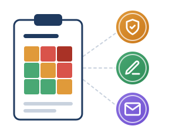

1Definizione
1Definizione 2Pianificazione
2Pianificazione 3Adozione
3Adozione 4Monitoraggio
4Monitoraggio 5Conclusione
5Conclusione
Dall’analisi dei rischi a valutazioni d’impatto, contratti e informative
Progettazione di dettaglio e gestione del rischio
D.M. 166/2025, par. 4.1, punto 2
- Analisi tecnico-organizzativa del caso d’uso e piano di mitigazione dei rischi.
- DPIA (art. 35 GDPR) integrata con la FRIA (art. 27 AI Act), secondo la gerarchia di mitigazione HUDERIA.
- Verifica dei fornitori (AgID per i SaaS, ISO/IEC 27001) e contratti ex art. 28 GDPR, con divieto di riuso di dati e prompt.
- Informativa alle famiglie, consenso dei genitori sotto i 14 anni (L. 132/2025, art. 4, c. 4) e moduli di opt-out.
Esempio: prima di acquistare le licenze
La piattaforma di tutoraggio scelta nella fase 1
- Dirigente e DPO redigono la DPIA/FRIA integrata e accertano che il software non usi sentiment analysis, vietata dall’art. 5 AI Act.
- Atto di nomina a Responsabile con clausola di Zero Data Retention per l’addestramento.
- Alle famiglie dei 120 alunni coinvolti: informativa e modulo di opt-out, senza penalizzazioni didattiche.